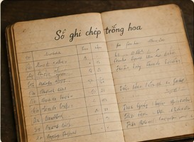
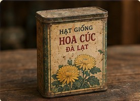

<meta charset="UTF-8">
<meta name="viewport" content="width=device-width, initial-scale=1">
<meta name="claude:viewport-fit-sides" content="cover">
<link rel="preconnect" href="https://fonts.googleapis.com">
<link rel="preconnect" href="https://fonts.gstatic.com" crossorigin>
<link rel="stylesheet" href="https://fonts.googleapis.com/css2?family=Cormorant+Garamond:wght@500;600;700&family=Be+Vietnam+Pro:wght@400;500;600;700&display=swap">
<link rel="stylesheet" href="style.css">
<title>Kho ký ức</title>
<meta name="description" content="Kho ký ức: hiện vật và tư liệu về năm làng hoa và Festival Hoa Đà Lạt.">

<header class="site-header">
  <div class="wrap">
    <a class="brand" href="index.html">Bảo tàng Hoa Đà Lạt</a>
    <nav class="nav" id="nav" aria-label="Điều hướng chính">
      <a href="index.html">Trang chủ</a><a href="hat-giong.html">Hạt giống ký ức</a><a href="index.html#lang-hoa">Năm làng hoa</a><a href="gieo-mam.html">Những người gieo mầm</a><a href="cong-nghe.html">Từ đôi bàn tay đến công nghệ</a><a href="festival.html">Festival Hoa</a><a href="kho-ky-uc.html" aria-current="true">Kho ký ức</a>
    </nav>
    <button class="menu-btn" id="menuBtn" aria-expanded="false" aria-controls="nav">Menu</button>
  </div>
</header>

<main id="top">
<section class="page-hero">
  <div class="wrap">
    <p class="crumbs"><a href="index.html">Trang chủ</a> / Kho ký ức</p>
    <p class="eyebrow" style="color: var(--gold)">Kho ký ức</p>
    <h1>Kho ký ức</h1>
    <p class="lede">Hiện vật và tư liệu về năm làng hoa, Festival Hoa và đời sống người trồng hoa.</p>
  </div>
</section>
<section class="block">
  <div class="wrap">
    <div class="section-head">
      <p class="eyebrow">Hiện vật trưng bày</p>
      <h2>Hiện vật theo làng hoa</h2>
      <p>Hiện vật được phân theo làng hoa, như đề cương đã ghi. Các ảnh minh họa đang được thay bằng ảnh chụp thật.</p>
    </div>
    <div class="filters" role="group" aria-label="Lọc hiện vật theo làng"><button class="chip" aria-pressed="true" data-filter="all">Tất cả</button><button class="chip" aria-pressed="false" data-filter="ha-dong">Hà Đông</button><button class="chip" aria-pressed="false" data-filter="thai-phien">Thái Phiên</button><button class="chip" aria-pressed="false" data-filter="van-thanh">Vạn Thành</button><button class="chip" aria-pressed="false" data-filter="xuan-tho">Xuân Thọ</button><button class="chip" aria-pressed="false" data-filter="da-thien">Đa Thiện</button><button class="chip" aria-pressed="false" data-filter="festival">Festival Hoa</button></div>
    <div class="object-grid"><article class="card item" data-cat="ha-dong"><span class="tag">Hà Đông</span><h3>Bình tưới nước thiếc gò tay</h3><p>Biểu tượng của người làm vườn xưa.</p></article><article class="card item" data-cat="ha-dong"><span class="tag">Hà Đông</span><h3>Bản phục chế khế ước cấp đất 1938</h3><p>Trưng bày trong lồng kính bảo quản.</p></article><article class="card item" data-cat="ha-dong"><span class="tag">Hà Đông</span><h3>Rương gỗ và trang phục</h3><p>Đi cùng người ra đi năm xưa.</p></article><article class="card item" data-cat="thai-phien"><span class="tag">Thái Phiên</span><h3>Hộp hạt giống hoa cúc Đà Lạt</h3><p>Hộp hạt giống thời kỳ phát triển cúc.</p></article><article class="card item" data-cat="thai-phien"><span class="tag">Thái Phiên</span><h3>Sổ ghi ngày công và sổ nợ phân bón</h3><p>Giấy tờ ố vàng theo thời gian.</p></article><article class="card item" data-cat="thai-phien"><span class="tag">Thái Phiên</span><div class="slot">Ảnh chờ chụp</div><h3>Bóng đèn sợi đốt kiểu cũ</h3><p>Thắp đèn đêm cho hoa cúc những năm 90.</p></article><article class="card item" data-cat="van-thanh"><span class="tag">Vạn Thành</span><div class="slot">Ảnh chờ chụp</div><h3>Đôi thùng gánh nước bằng tôn thiếc</h3><p>Hàn vá nhiều chỗ, đi kèm đòn gánh tre.</p></article><article class="card item" data-cat="van-thanh"><span class="tag">Vạn Thành</span><h3>Bộ dụng cụ ghép cành</h3><p>Nghệ thuật ghép cành trên sườn đồi.</p></article><article class="card item" data-cat="xuan-tho"><span class="tag">Xuân Thọ</span><div class="slot">Ảnh chờ chụp</div><h3>Đèn măng-xông hoặc đèn dầu cũ</h3><p>Đời sống những năm đầu lập làng.</p></article><article class="card item" data-cat="xuan-tho"><span class="tag">Xuân Thọ</span><h3>Sổ ghi chép thu chi bán hoa</h3><p>Ghi chép từ thời kỳ đầu.</p></article><article class="card item" data-cat="da-thien"><span class="tag">Đa Thiện</span><div class="slot">Ảnh chờ chụp</div><h3>Chiếc gùi tre hoặc mây</h3><p>Đeo lưng khi làm vườn.</p></article><article class="card item" data-cat="da-thien"><span class="tag">Đa Thiện</span><div class="slot">Ảnh chờ chụp</div><h3>Lọ thủy tinh hạt giống cẩm chướng</h3><p>Hạt giống thời kỳ đầu.</p></article><article class="card item" data-cat="festival"><span class="tag">Festival Hoa</span><div class="slot">Ảnh chờ chụp</div><h3>Bản phác thảo logo đầu tiên</h3><p>Tay vẽ của họa sĩ Nguyễn Phúc.</p></article><article class="card item" data-cat="festival"><span class="tag">Festival Hoa</span><div class="slot">Ảnh chờ chụp</div><h3>Thiệp cưới từ đám cưới hoa 2007</h3><p>Một trong 114 tấm thiệp.</p></article></div>
  </div>
</section>
<section class="block alt">
  <div class="wrap">
    <div class="section-head">
      <p class="eyebrow">Gửi ký ức</p>
      <h2>Đóng góp hiện vật</h2>
      <p>Nếu bạn có hiện vật, tư liệu hoặc câu chuyện về nghề trồng hoa Đà Lạt, bảo tàng mong được tiếp nhận. Thông tin liên hệ và cách gửi sẽ được bổ sung.</p>
    </div>
  </div>
</section>
<section class="block"><div class="wrap"><div class="verify"><strong>Cần kiểm chứng trước khi công bố</strong><ul><li>Ảnh có ‘ảnh minh họa’ được cắt từ mockup, cần thay bằng ảnh chụp hiện vật thật.</li><li>Các hiện vật còn lại hiện là khung chờ ảnh, cần ghi niên đại dự kiến, chất liệu và tình trạng bản gốc hay phục chế.</li><li>Đoạn ‘QR giọng đọc’ trong đề cương chưa có tệp âm thanh.</li></ul></div></div></section>
</main>

<footer>
  <div class="wrap">
    <div><strong>Bảo tàng Hoa Đà Lạt</strong><br>Nơi ký ức nở thành hoa.</div>
    <div>Thông tin tham quan và liên hệ đang được cập nhật.</div>
  </div>
</footer>

<script>
  const menuBtn = document.getElementById('menuBtn');
  const nav = document.getElementById('nav');
  menuBtn.addEventListener('click', () => {
    const open = nav.classList.toggle('open');
    menuBtn.setAttribute('aria-expanded', String(open));
  });
  document.querySelectorAll('.chip').forEach(chip => {
    chip.addEventListener('click', () => {
      const f = chip.dataset.filter;
      document.querySelectorAll('.chip').forEach(c => c.setAttribute('aria-pressed', String(c === chip)));
      document.querySelectorAll('.item').forEach(o => {
        o.hidden = !(f === 'all' || o.dataset.cat === f);
      });
    });
  });
</script>
